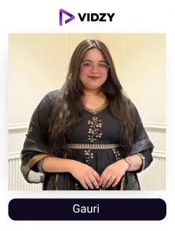
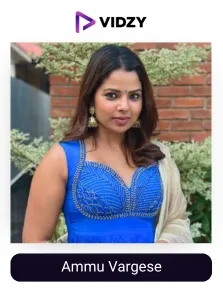
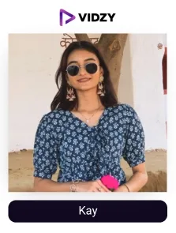
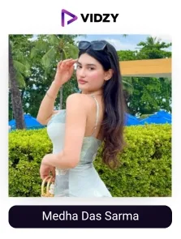
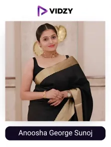
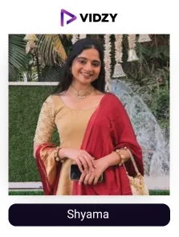
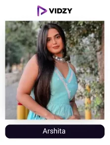
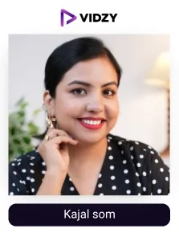
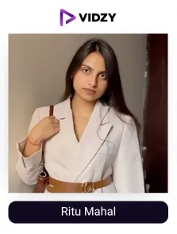

With fashion, we can express ourselves through different styles, trends, and creativity, reflecting our personality and how we want to present ourselves to the world.
In India, the fashion industry is expected to grow and reach a revenue of US$ 1,489.5 million by 2027, and content creators and influencers are leading the growth path.
According to sources, 76% of consumers discover fashion through styling tips, outfit ideas, and OOTD’s shared by fashion UGC creators on various social media platforms. They have transformed the way, audience perceives fashion, especially in the digital space.
Their authentic content delivery brings fashion to life and connects with the audience on a deeper level and influencing their buying choices. Notably, 69% of consumers trust the product recommendations they get from fashion UGC creators before making their shopping decisions.
As UGC creators in India gain more credibility, fashion brands in India are recognising their power and partnering with them to create meaningful connections with their target audience, build trust, and boost their marketing strategies to achieve impactful growth results.
Meanwhile, even though many brands have successfully incorporated UGC in their strategies, carrying out the entire process without the help of an expert can be complex and tedious.
From finding the right creator to developing strategies and optimizing campaigns, a partnership with the best UGC agency can help them execute the campaign effectively, ensuring highly impactful results, as an enhancement in awareness, trust, and sales.
Who Are Fashion UGC Creators?
Fashion UGC creators are those people who create content focused on fashion, based on their experience and interaction with brands, products, or services. They post real, authentic content that their followers can relate to in everyday situations.
They share outfit styling, thoughts on body positivity, promote sustainability, and ultimately hold the power to make and break the perspective of the audience regarding a product. Their engaging and effective way of content presentation makes the brand feel more genuine and realistic to potential customers, thereby building confidence and generating sales.
Therefore, fashion brands are developing a strong connection with their audience through fashion UGC creators. Let's explore who they are and the list of India’s top fashion influencers.
List of top fashion UGC creators in India
Contents
-

1. Gauri
Channel: Gauri
USP:
Gauri Joshhi is a fashion and UGC creator based in Jaipur, India. She especially focuses on body-positive fashion, celebrating curves and self-love through her amazing content.
About the creator:
Gauri believes fashion comes in all sizes and shapes. It can be embraced by everyone. She shares stylish outfit ideas and fashion tips, especially for curvy girls. She helps them boost their confidence and encourages them to love their bodies.
Her content is a perfect blend of traditional and modern styles. Most of her hauls are affordable and sustainable. Her audience loves her radiance and her inspiring posts on accepting the beauty of curves and believing that anyone can look great with the right outfit and attitude. Her audience loves her real and inspiring approach, making her a powerful voice in the domain.
KPIs
- Followers: 14.3K
- Engagement Rate: 1.36%
Brands collaborated with:
Bioderma, Sterlyn, Laferah, Swiss beauty, Glamzei
-

2. Ammu Vargese
Channel: Ammu Vargese
USP:
Ammu is a charming and talented fashion influencer, entrepreneur, and motivational speaker. She loves keeping her audience updated with the latest trends in fashion.
About the creator:
Ammu is a fashion creator and stylist admired for her creativity, easy and classy approach to fashion. She was also featured in ‘The New Indian Express’ for her amazing work. While the majority of her content is inclined towards styling, she also talks about lifestyle and beauty.
Her venture, stylewithammu, provides styling services to prestigious clients. Her classy picks, outfit inspiration, and aesthetic fashion are adored by her followers. Ammu creates charming and visually pleasing content where she perfectly blends her choice with the latest trends to create the best style statements.
KPIs
- Followers: 81.9K
- Engagement Rate: 1.04%
Brands collaborated with:
Biba, Joyalukkas, Max fashions
-
3. Reetu Kumar
Channel: Reetu Kumar
USP:
Reetu Kumar is a content creator focusing on fashion, lifestyle, and beauty. She showcases outfits for all occasions and even provides the necessary links to her followers for better engagement.
About the creator:
Reetu is an amazing creator who believes that every wardrobe should have a mix of classic Indian staples and modern essentials to create versatile looks. Her content is a mixture of everyday fashion details, relatable experiences, making her a go-to influencer for style enthusiasts.
She expertly shares accessorizing tips and teaches how to elevate any outfit. Her keen eye for detail makes every look stand out.
KPIs
- Followers: 20.2K
- Engagement Rate: 1.95%
Brands collaborated with:
Lakme, Derma co, Garnier, The souled store
-

4. Kay
Channel: Kay
USP:
Kashish is a UGC creator and model, based in Jaipur. She is a unique and confident personality when it comes to experimenting with fashion.
About the creator:
Kashish shows a friendly approach with her engaging content, and followers feel deeply connected to her. She shares honest product reviews, fashion tips, and daily life moments.
She is also a talented entrepreneur, having her own brand named urbanpearlstore, providing handmade scrunchies and accessories. Kashish also mentors young women and aspiring creators by sharing tips and strategies to help them grow in the digital world.
KPIs
- Followers: 9.8K
- Engagement Rate: 9.34%
Brands collaborated with:
Rare beauty, Sephora India, Goldcoffee, Plum
-

5. Medha Das Sarma
Channel: Medha Das Sarma
USP:
Medha is an enthusiastic and energetic fashion UGC creator.
About the creator:
Medha is an energetic and stylish UGC creator. Each of her posts carries a completely new, innovative look. Her picks are the best, stylish, affordable pieces, which she effortlessly combines with local collections and shares amazing, stunning inspirations with her followers.
She also creates reels comparing two clothing sites to enable her followers to select the best based on their taste. Her followers find it comfortable to trust her recommendations because she is very straightforward.
KPIs
- Followers: 521K
- Engagement Rate: 2.01%
Brands collaborated with:
Lovegen, Ponds, Maybelline, Tresemme
-

6. Anoosha George Sunoj
Channel: Anoosha George Sunoj
USP:
Anoosha is a digital creator living in Kerala. She often posts stories of her events and personal fashion tips, which are adored by her audience.
About the creator:
Anoosha is a stunning and talented content creator who focuses on fashion, beauty, and lifestyle. She is the founder of Style Diva Label, which offers a range of elegant and contemporary women's clothing. She shares styling tips, outfit inspirations, and the latest trends with her audience. Beyond fashion, Anoosha shares lifestyle content and glimpses of her journey. She is also a successful mom influencer. Anoosha has received many awards for her work in fashion content creation.
KPIs
- Followers: 207K
Brands collaborated with:
Daniel Wellington, Pantaloons, Himalaya
-

7. Shyama
Channel: Shyama
USP:
Shyama is a fashion influencer from Vadodara. She is well-known for her fun and authentic content, where she provides fashion, styling, and posing tips.
About the creator:
Shyama promotes basic outfits for styling and helps her audience feel confident and stylish with casual picks. She also shares various hacks, tips, and tricks to tackle styling challenges. Her feed showcases a mix of traditional and contemporary fashion, reflecting her personal style and creativity. Shyama’s content is both inspirational and convenient for her followers.
KPIs
- Followers: 42.4K
- Engagement Rate: 13 %
Brands collaborated with:
The Souled Store, Max Fashions, Daniel Wellington
-

8. Arshita
Channel: Arshita
USP:
Arshita is a popular fashion and beauty creator living in Chandigarh. She loves sharing what she loves to wear.
About the creator:
Arshita combines fitness with fashion and offers inspiration through stylish dress hauls, and also focuses on wellness and active lifestyles. Her outfit reels have garnered more than 83K views, showing audience love towards her fashion styling.
She mostly posts about lifestyle and fashion tips with occasional snippets of her life and ideas about her dressing. Her glamorous and appealing outfit posts are admired by her followers.
KPIs
- Followers: 140K
- Engagement Rate: 1%
Brands collaborated with:
Vaseline, Aqualife, Biotique, Bellavita
-

9. Kajal som
Channel: Kajal som
USP:
Kajal is a fashion and beauty enthusiast who loves exploring new trendy outfits and sharing the best ones with her fans on Instagram.
About the creator:
Kajal has a charming personality and can make her viewers stay hooked to her Instagram handle with her engaging posts. Her stunning fashion week reels and creator event videos are admired by her followers.
She is also a beauty enthusiast who loves sharing her favorite beauty picks with her community. She loves sharing GRWM, tutorial videos, must-haves, and other fun reels to create engagement.
KPIs
- Followers: 165K
- Engagement Rate: 1.88%
Brands collaborated with:
Tresemme, Dove, Plix, Bodywise, Saturn
-

10. Ritu Mahal
Channel: Ritu Mahal
USP:
Ritu is a versatile content creator who can conveniently blend fashion, beauty, and skincare in her content.
About the creator:
Ritu is a fashion UGC creator known for her classy and charming persona that can effortlessly capture the attention of her followers. Her dimpled smile and friendly storytelling way of introducing products have garnered her collaborations with many top brands.
Her friendly and approachable nature makes her a favorite creator among her audience. Her posts always showcase versatility and reflect class and elegance.
KPIs
- Followers: 7.4K
- Engagement Rate: 2.63%
Brands collaborated with:
Vanesa beauty, Loccitane, Loreal, Thrive
Conclusion:
Today, fashion brands succeed by being authentic, real, and relatable, and UGC creators play a big role in making that happen. The top fashion UGC creators in India aren’t just setting trends, they are helping businesses grow by creating content that feels authentic and connects with audiences. Their high-quality and engaging content boosts trust, increases engagement, and ultimately sales.
At Vidzy, we don't just connect brands with the best UGC creators, we craft and share authentic and engaging content that truly resonates with your audience, ensuring the brand makes a strong digital presence in the market.
Partner with Vidzy today and let the power of UGC make your fashion brand shine like never before!